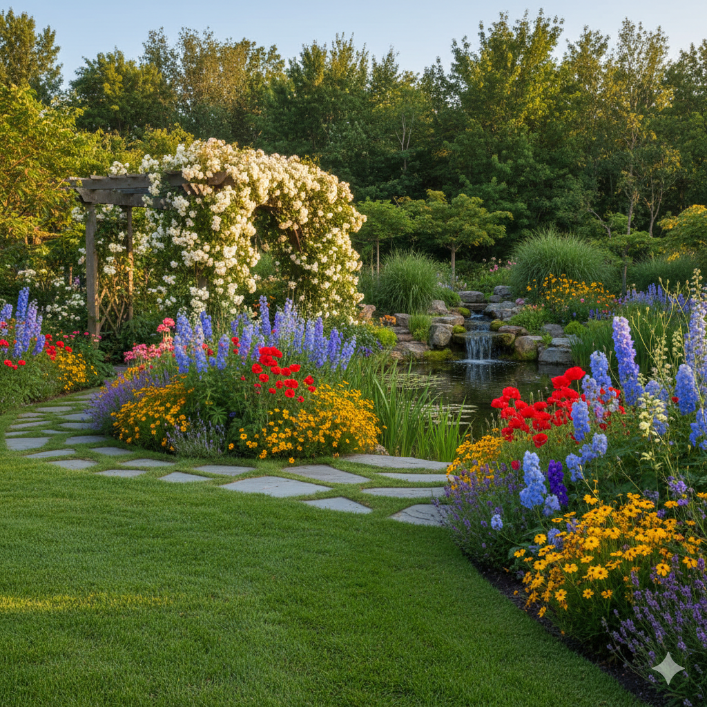
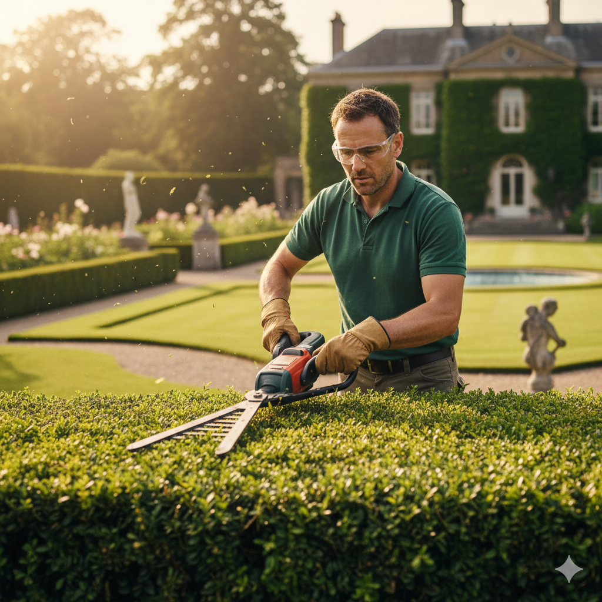

Nasze usługi
Projektowanie Ogrodów
Tworzymy spersonalizowane, estetyczne i funkcjonalne projekty ogrodów dostosowane do Twoich potrzeb i budżetu.
Zakładanie Trawników
Profesjonalne przygotowanie terenu, wybór najlepszej mieszanki nasion lub montaż trawnika z rolki, gwarantujące gęstą zieleń.
Pielęgnacja Sezonowa
Kompleksowa opieka przez cały rok: koszenie, nawożenie, aeracja, wertykulacja i zabezpieczanie roślin na zimę.
Przykładowe realizacje

